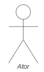
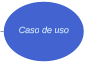
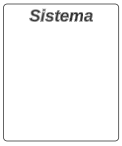
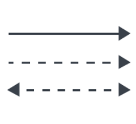

Casos de Uso
Introdução
O diagrama de casos de uso ilustra as funcionalidades que um sistema oferece e como os usuários externos interagem com ele. Essas funcionalidades, conhecidas como casos de uso, representam as ações executadas pelo sistema. Esse diagrama é útil para detalhar as operações principais do sistema e como os usuários se envolvem com essas operações.
Metodologia
A elaboração deste artefato seguiu uma metodologia clássica, consistindo na representação dos casos de uso por intermédio de um diagrama UML. Os componentes deste diagrama e as respectivas explicações estão detalhados na Tabela 1. Para a confecção do diagrama, utilizou-se o Draw.io, um aplicativo online especializado na criação de diagramas.
Tabela 1 - Elementos do diagrama de casos de uso.
| Símbolo | Nome | Descrição |
|---|---|---|
|  | Atores | Atores representam algo ou alguém que utiliza o sistema para atingir um objetivo, podendo ser uma pessoa, organização, outro sistema ou dispositivo externo. Atores são objetos externos, que serão representados fora dos limites do projeto. Os atores também podem ser dividos em atores primários e secundários, os primários são aqueles que iniciam a utilização do sistema, que são representados do lado esquerdo do diagrama, e os secundários são os atores que reagem a uma certa ação, representados do lado direito do diagrama. |
|  | Casos de Uso | Representa uma ação que realiza uma tarefa dentro do sistema, são representados dentro do retângulo do sistema pois são funcionalidades realizadas pelo projeto que está sendo implementado. |
|  | Sistema | Projeto que está sendo desenvolvido. O retângulo que abrange o sistema representa os limites do projeto, o que ele deve realizar, separando os casos de uso, que podem ficar dentro do sistema, dos atores, que devem ficar do lado de fora do retângulo. |
|  | Relacionamentos | São interações que acontecem entre os atores com os casos de uso ou entre os próprios casos de uso. |
Fonte: Ricardo Augusto, 2024.
Existem alguns tipos de relacionamento:
- Associação: indica que existe uma comunicação ou interação simples entre os dois elementos do relacionamento. É representada por uma linha simples.
- Inclusão: indica uma dependência entre um caso de uso base para um caso de uso incluído, indica que um caso de uso base só irá ocorrer quando esse caso de uso incluído for finalizado. É representado por uma seta tracejada que aponta do caso base para o caso de uso incluído;
- Extensão: indica que um caso de uso estendido será realizado somente algumas vezes em que um caso de uso base for realizado, só irá ocorrer quando alguns critérios forem cumpridos. É representado por uma seta tracejada apontando do caso estendido para o caso de uso base;
- Generalização (ou herança): indica uma hierarquia entre os casos de uso. Isso significa que um caso de uso especializado (secundário) herda comportamentos e características de um caso de uso geral (primário), mas também cada caso de uso secundário acrescenta algo novo ao caso de uso. É representado por uma seta simples, apontado do caso de uso secundário para o primário.
Diagrama de Casos de Uso
Figura 1 - Diagrama de Casos de Uso.

Acesse a imagem nesse link
Fonte: Cláudio, Danilo, Elias, Gabriel B. Bertolazi, Gabriel F. J. Silva, Pablo, Ricardo, 2024.
Especificação dos casos de uso
A especificação dos casos de uso é uma técnica utilizada para descrever detalhadamente as interações entre os usuários e o sistema. Ela documenta os passos seguidos em cada caso de uso, incluindo os eventos que desencadeiam a interação, as ações realizadas e as respostas esperadas do sistema, na tabela 2 temos o modelo base usado em nossas especificações dos casos de uso.
Tabela 2 - Modelo de especificação de caso de uso.
| UCxx | Nome do caso de uso |
|---|---|
| Descrição | Uma breve explicação do que o caso de uso faz ou descreve. |
| Atores | Os papéis ou entidades que interagem com o sistema. |
| Pré-condição | As condições que devem ser verdadeiras antes que o caso de uso possa ser iniciado. |
| Pós-condição | As condições que devem ser verdadeiras após a conclusão bem-sucedida do caso de uso. |
| Fluxo principal | A sequência de passos que descreve a interação típica entre o ator e o sistema para atingir o objetivo do caso de uso. |
| Fluxo alternativo | Sequências de passos que ocorrem se condições específicas forem atendidas durante a execução do caso de uso, mas não são necessariamente o caminho principal. |
| Fluxo de exceções | Sequências de passos que descrevem como lidar com erros ou situações inesperadas durante a execução do caso de uso. |
Fonte: Ricardo, 2024.
1. Calcular preços e prazos de entrega
Abaixo, na tabela 3, está especificado o caso de uso para a funcionalidade de "Calcular preços e prazos de entrega".
Tabela 3 - Calcular preços e prazos de entrega.
| UC01 | Calcular preços e prazos de entrega |
|---|---|
| Descrição | Permite o usuário simular os preços e prazos de uma entrega antes de postá-la. |
| Atores | Usuário |
| Pré-condição | 1. Estar conectado à internet 2. Usuário estar na tela inicial ou menu. |
| Pós-condição | O usuário deve visualizar as comparações de serviços de entrega. |
| Fluxo principal | 1. O usuário inicia o aplicativo 2. Na seção "Preços e Prazos", o usuário seleciona a opção "Nacional". 3. O aplicativo exibe uma tela com as informações de CEP, formato do objeto, peso e o valor declarado. 4. Nos campos de CEP, o usuário escreve o CEP e seleciona clicando no símbolo de "Lupa" ao lado. 5. Depois, o usuário escolhe o formato do objeto e informa as dimensões. 6. O usuário seleciona o peso do objeto. 7. O usuário informa o valor declarado. 8. Após o usuário cadastrar todas as informações, ele clica em "Simular". 9. O aplicativo exibe uma tela com as comparações dos tipos de serviços, exibindo os preços e prazos de entrega. |
| Fluxo alternativo |
|
| Fluxo de exceções |
|
Fonte: Claudio Henrique, 2024.
2. Realizar compras na loja online
Abaixo, na tabela 4, está especificado o caso de uso para a funcionalidade de "Realizar compras na loja online".
Tabela 4 - Realizar Compras na Loja Online.
| UC02 | Realizar compras na loja online |
|---|---|
| Descrição | Neste caso de uso é possível realizar compras de diversos itens na loja online. |
| Atores | Usuário |
| Pré-condição | 1. É necessário que o usuário acesse a página da loja online dos correios e esteja logado. |
| Pós-condição | O usuário realiza uma compra na loja online. |
| Fluxo principal | 1.O usuário navega até a opção compras e logo em seguida loja online. |
| Fluxo alternativo |
|
| Fluxo de exceções |
|
Fonte: Elias F. Oliveira, 2024.
3. Mudar locais de recebimento de pacotes
Abaixo, na tabela 5, está especificado o caso de uso para a funcionalidade de "Mudar locais de recebimento de pacotes".
Tabela 5 - Mudar locais de recebimento de pacotes.
| UC03 | Nome do caso de uso |
|---|---|
| Descrição | Usuário quer mudar o endereço de recebimento de um pacote |
| Atores | Usuário |
| Pré-condição |
|
| Pós-condição | Usuário redirecionado para as opções de recebimento de encomendas disponíveis |
| Fluxo principal |
|
| Fluxo alternativo |
|
| Fluxo de exceções |
|
Fonte: Gabriel B. Bertolazi, 2024.
4. Realizar pré-postagem
Abaixo, na tabela 6, está especificado o caso de uso para a funcionalidade de "Realizar pré-postagem".
Tabela 6 - Realizar uma pré-postagem.
| UC04 | Realizar pré-postagem |
|---|---|
| Descrição | Usuário realiza o processo de postagem pelo app |
| Atores | Usuário |
| Pré-condição |
|
| Pós-condição | Usuário recebe um código de confirmação da pré-postagem |
| Fluxo principal |
|
| Fluxo alternativo |
|
| Fluxo de exceções |
|
Fonte: Gabriel F. J. Silva, 2024.
5. Gerenciar minhas importações
Abaixo, na tabela 7, está especificado o caso de uso para a funcionalidade de "Gerenciar minhas importações".
Tabela 7 - Especificação de caso de uso para gerenciar minhas importações.
| UC05 | Gerenciar minhas importações |
|---|---|
| Descrição | Neste caso de uso o usuario pode consultar e resolver situações alfandegarias. |
| Atores | |
| Pré-condição | Acesso a internet |
| Pós-condição | Usuario sem pendencias alfandegarias. |
| Fluxo principal | Consulta de Importações: |
| Fluxo alternativo | Consulta de Histórico de Situações Alfandegárias: |
| Fluxo de exceções | Erro de Autenticação: Se o usuário não estiver autenticado, o sistema solicita que ele faça login. Após a autenticação, o usuário pode continuar com as operações de gerenciamento de importações. |
Fonte: Pablo S. Costa, 2024.
6. Rastrear encomendas
Abaixo, na tabela 8, está especificado o caso de uso para a funcionalidade de "Rastrear encomendas".
Tabela 8 - Rastrear encomendas.
| UC06 | Rastrear Encomendas |
|---|---|
| Descrição | Este caso de uso permite que os usuários do site dos correios rastreiem suas encomendas inserindo o número de rastreamento fornecido. |
| Atores | Usuário |
| Pré-condição | 1. O usuário estar conectado à internet e acessando o site dos correios. |
| Pós-condição | O usuário recebe informações atualizadas sobre o status da sua encomenda. |
| Fluxo principal | 1. O usuário acessa o site dos correios. |
| Fluxo alternativo | 1. Se o número de rastreamento fornecido pelo usuário for inválido, o sistema exibe uma mensagem de erro. |
| Fluxo de exceções | 1. Se houver um problema ao recuperar as informações da encomenda, como falha de conexão com o serviço de rastreamento, o sistema exibe uma mensagem de erro e orienta o usuário a tentar novamente mais tarde. |
Fonte: Ricardo Augusto, 2024.
7. Buscar por documentos perdidos:
Abaixo, na tabela 9, está especificado o caso de uso para a funcionalidade de "Buscar por documentos perdidos".
Tabela 9 - Buscar por documentos perdidos em envios.
| UC07 | Buscar por documentos perdidos |
|---|---|
| Descrição | Este caso de uso permite que os usuários do site dos correios busquem pelo seus documentos caso tenham perdido algum deles, escolhendo o tipo do documento e o colocando o seu nome completo. |
| Atores | Usuário. |
| Pré-condição | 1. O usuário estar conectado à internet e acessando o site dos correios. |
| Pós-condição | 1. O usuário recebe informações atualizadas se o seu documento está com os correios. |
| Fluxo principal | 1. O usuário acessa o site dos correios. |
| Fluxo alternativo | 1. Se o documento selecionado pelo usuário não for o documento perdido ou se o nome do usuário for preenchido de forma errada o sistema exibe uma mensagem de erro. |
| Fluxo de exceções | 1. Se houver um problema ao recuperar as informações das agências, como falha de conexão com o serviço de busca, o sistema exibe uma mensagem de erro e orienta o usuário a tentar novamente mais tarde. |
Fonte: Danilo Carvalho Antunes, 2024.
Bibliografia
Tutorial de Caso de Uso UML. Disponível em: https://www.youtube.com/watch?v=ab6eDdwS3rA. Acesso em: 15 de Maio de 2024.
SERRANO M., SERRANO M. Requisitos - Aula 13. Disponível em: https://aprender3.unb.br/pluginfile.php/2845007/mod_resource/content/1/Requisitos%20-%20Aula%20013a.pdf. Acessado em 14 de Maio de 2024.
Grupo 01 de Requisitos de Software 2023.1. Projeto do aplicativo Bilheteria Digital. Disponível em : https://requisitos-de-software.github.io/2023.1-BilheteriaDigital/. Acesso em: 19 de Maio de 2024
Histórico de Versões
| Versão | Data | Descrição | Autor(es) | Revisor(es) |
|---|---|---|---|---|
1.0 |
14/05/2024 | Criação do documento | Ricardo Augusto & Pablo S. Costa | Gabriel F. J. Silva |